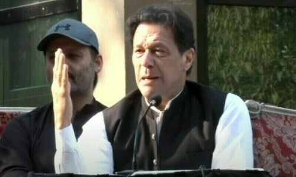

politics

A Supreme Court hearing on Thursday on a case about changes in the accountability laws turned out anticlimactic as ex-premier Imran Khan appeared via video link but did not get a chance to speak as a petitioner in the matter.
The development came after the SC on Tuesday, hearing the case about the National Accountability Bureau (NAB) laws, had ordered the federal and Punjab governments to facilitate Imran’s appearance on Thursday via video link from Adiala jail.
Justice Athar Minallah — part of the five-member bench hearing the case — had stated that the top court could not deny an audience to the ex-premier if he wished to appear before it for the case.
Today, the bench — headed by Chief Justice of Pakistan (CJP) Qazi Faez Isa and also including Justices Aminuddin Khan, Jamal Khan Mandokhail, Athar Minallah and Hasan Azhar Rizvi — resumed hearing the case.
While the previous hearing was broadcast live, today’s hearing was not.
It remains unclear why the live stream did not happen when it originally did in Tuesday’s hearing.
According to Dawn.com correspondent, Imran appeared via video link dressed in blue. The PTI circulated a picture of the purported video call, which instantly went viral, with a laptop screen showing him seated in a room wearing a light-blue shirt, freshly shaven, and seemingly uninterested as he rested his face on his hand.
Though the origin of the screen grab could not be verified independently, it appeared to match what was shown on the screen inside the court, according to a Reuters reporter present inside the courtroom.
Up to 15,000 of Imran’s supporters waited on the PTI’s YouTube channel for the court visuals to be aired, Reuters reported. That number fell below 5,000 when it became apparent the live stream was not happening.
Regarding Imran’s video link appearance, CJP Isa said “the same arrangement will continue”, according to the Reuters reporter.
Court staff were seen checking how such an image could have been captured when phones or cameras were not allowed in the courtroom, the Reuters reporter said, but the court did not take any formal notice or issue any orders for an investigation.
Imran remained seated throughout the hearing but looked uncomfortable and kept changing positions when he was not asked any questions by the court even after a couple of hours, according to the Reuters reporter.
If live-streamed, this would have been Imran’s first public appearance since his arrest from Zaman Park in August last year in the Toshakhana case despite reservations expressed by Law Minister Azam Nazeer Tarar about the SC’s directives.
A day ago, a division bench of the Islamabad High Court had granted the former premier bail in the £190 million case on “reasonable ground” while an Islamabad session court acquitted him in a 2022 case in connection with the Azadi March.
On the other hand, the PTI had expressed apprehensions about a visitors’ ban in the Adiala jail, saying the move was implemented to keep the party chief away from the SC proceedings.